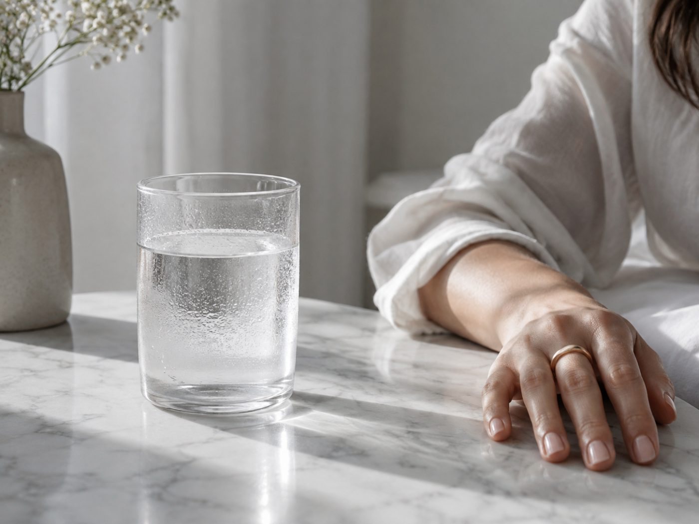

DAY BEFORE
前日に減らすと、
当日に出る。
前日だけ極端に食事を抜く人がいますが、これは逆効果です。翌朝の肌の状態が落ち、顔色も悪くなります。

先に結論です。前日は普段どおり食べてください。変えるのは塩分とアルコールだけ。水はしっかり摂ります。断食も過食もしないのが正解です。
避けるもの
| 避けるもの | 理由 |
|---|---|
| ラーメン・鍋・味の濃い外食 | 塩分が翌朝の顔に出ます |
| アルコール | 顔と目のむくみに直結します |
| 生もの（刺身・生牡蠣） | 当日に体調を崩すリスクは取らない |
| 初めて食べるもの | 合わなかった場合の影響が読めません |
| 食物繊維の摂りすぎ | お腹が張ってドレスがきつくなります |
| カフェインの摂りすぎ | 眠れなくなります。睡眠が最優先 |

塩分を落として水は摂る
食べていいもの
普段の食事で構いません。あえて選ぶなら、たんぱく質を確保して、塩分を抑えたものです。鮭や鶏肉、卵、豆腐。味付けを薄くするだけで塩分は十分に落ちます。
炭水化物も抜かないでください。前日に糖質を抜くと、当日の顔がしぼんで見えます。当日は長時間立って笑い続けるので、エネルギーが必要です。
水は控えない
むくみを恐れて水を減らす人が多いのですが、これが最もよくある間違いです。水分が足りないと体は水を保持しようとします。結果としてむくみます。
やるべきは逆で、塩分を落として水はしっかり摂ることです。1.5〜2Lを目安に、一度に大量ではなく分けて飲んでください。
作る余裕がない場合
前日は最も忙しい日です。ここで食事を作る余裕はまずありません。塩分が計算されているものを用意しておくと、判断そのものを省けます。
当日の朝
朝食は抜かないでください。式の間、食事はほとんど摂れません。空腹で長時間立つと顔色が悪くなります。
温かい飲み物と、消化のいいもの。おにぎり1個と味噌汁でも構いません。冷たいものより温かいもののほうが、顔のむくみは引きやすくなります。
次に読む
当日朝の手順は顔のむくみを引かせる手順、1週間前からの流れは前撮り前の1週間に。